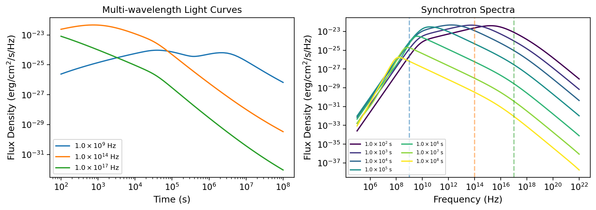
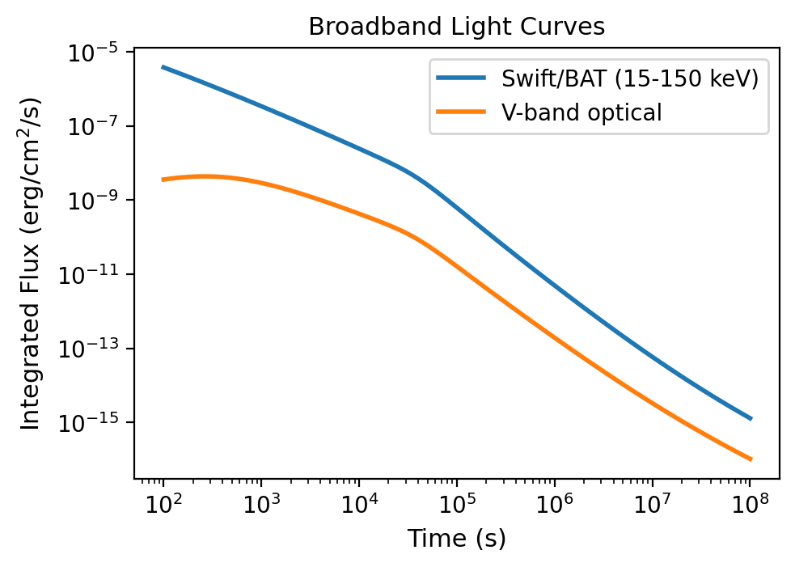

Basic Usage
Setting up a simple afterglow model
import matplotlib.pyplot as plt
import numpy as np
from VegasAfterglow import ISM, TophatJet, Observer, Radiation, Model
# Define the circumburst environment (constant density ISM)
medium = ISM(n_ism=1)
# Configure the jet structure (top-hat with opening angle, energy, and Lorentz factor)
jet = TophatJet(theta_c=0.1, E_iso=1e52, Gamma0=300)
# Set observer parameters (distance, redshift, viewing angle)
obs = Observer(lumi_dist=1e26, z=0.1, theta_obs=0)
# Define radiation microphysics parameters
rad = Radiation(eps_e=1e-1, eps_B=1e-3, p=2.3, xi_e=1)
# Combine all components into a complete afterglow model
model = Model(jet=jet, medium=medium, observer=obs, fwd_rad=rad, resolutions=(0.1, 0.25, 10))
# Define time range for light curve calculation
times = np.logspace(2, 8, 200)
# Define observing frequencies (radio, optical, X-ray bands in Hz)
bands = np.array([1e9, 1e14, 1e17])
# Calculate the afterglow emission at each time and frequency
# NOTE that the times array needs to be in ascending order
results = model.flux_density_grid(times, bands)
# Visualize the multi-wavelength light curves
plt.figure(figsize=(4.8, 3.6),dpi=200)
# Plot each frequency band
for i, nu in enumerate(bands):
exp = int(np.floor(np.log10(nu)))
base = nu / 10**exp
plt.loglog(times, results.total[i,:], label=fr'${base:.1f} \times 10^{{{exp}}}$ Hz')
plt.xlabel('Time (s)')
plt.ylabel('Flux Density (erg/cm²/s/Hz)')
plt.legend()
# Define broad frequency range (10⁵ to 10²² Hz)
frequencies = np.logspace(5, 22, 200)
# Select specific time epochs for spectral snapshots
epochs = np.array([1e2, 1e3, 1e4, 1e5 ,1e6, 1e7, 1e8])
# Calculate spectra at each epoch
results = model.flux_density_grid(epochs, frequencies)
# Plot broadband spectra at each epoch
plt.figure(figsize=(4.8, 3.6),dpi=200)
colors = plt.cm.viridis(np.linspace(0,1,len(epochs)))
for i, t in enumerate(epochs):
exp = int(np.floor(np.log10(t)))
base = t / 10**exp
plt.loglog(frequencies, results.total[:,i], color=colors[i], label=fr'${base:.1f} \times 10^{{{exp}}}$ s')
# Add vertical lines marking the bands from the light curve plot
for i, band in enumerate(bands):
exp = int(np.floor(np.log10(band)))
base = band / 10**exp
plt.axvline(band,ls='--',color='C'+str(i))
plt.xlabel('frequency (Hz)')
plt.ylabel('flux density (erg/cm²/s/Hz)')
plt.legend(ncol=2)
plt.title('Synchrotron Spectra')
{kind=link}

Multi-wavelength light curves (left) and broadband synchrotron spectra at different epochs (right). Dashed vertical lines mark the three frequency bands.
Calculate flux on time-frequency pairs
Suppose you want to calculate the flux at specific time-frequency pairs (t_i, nu_i) instead of a grid (t_i, nu_j), you can use the following method:
# Define time range for light curve calculation
times = np.logspace(2, 8, 200)
# Define observing frequencies (must be the same length as times)
bands = np.logspace(9,17, 200)
results = model.flux_density(times, bands) #times array must be in ascending order
# the returned results is a FluxDict object with arrays of the same shape as the input times and bands.
Calculate flux with exposure time averaging
For observations with finite exposure times, you can calculate time-averaged flux by sampling multiple points within each exposure:
# Define observation times (start of exposure)
times = np.logspace(2, 8, 50)
# Define observing frequencies (must be the same length as times)
bands = np.logspace(9, 17, 50)
# Define exposure times for each observation (in seconds)
expo_time = np.ones_like(times) * 100 # 100-second exposures
# Calculate time-averaged flux with 20 sample points per exposure
results = model.flux_density_exposures(times, bands, expo_time, num_points=20)
# The returned results is a FluxDict object with arrays of the same shape as input times and bands
# Each flux value represents the average over the corresponding exposure time
Note
The function samples num_points evenly spaced within each exposure time and averages the computed flux. Higher num_points gives more accurate time averaging but increases computation time. The minimum value is 2.
Calculate bolometric flux (frequency-integrated)
For broadband flux measurements integrated over a frequency range (e.g., instrument bandpasses like Swift/BAT, Fermi/LAT):
# Define time range for broadband light curve calculation
times = np.logspace(2, 8, 100)
# Example 1: Swift/BAT bandpass (15-150 keV ≈ 3.6e18 - 3.6e19 Hz)
nu_min_bat = 3.6e18 # Lower frequency bound [Hz]
nu_max_bat = 3.6e19 # Upper frequency bound [Hz]
num_points = 20 # Number of frequency sampling points for integration
# Calculate frequency-integrated flux
flux_bat = model.flux(times, nu_min_bat, nu_max_bat, num_points)
# Example 2: Custom optical band (V-band: 5.1e14 ± 5e13 Hz)
nu_min_v = 4.6e14 # V-band lower edge [Hz]
nu_max_v = 5.6e14 # V-band upper edge [Hz]
flux_v = model.flux(times, nu_min_v, nu_max_v, num_points)
# Plot broadband light curves
plt.figure(figsize=(8, 6))
plt.loglog(times, flux_bat.total, label='Swift/BAT (15-150 keV)', linewidth=2)
plt.loglog(times, flux_v.total, label='V-band optical', linewidth=2)
plt.xlabel('Time [s]')
plt.ylabel('Integrated Flux [erg/cm²/s]')
plt.legend()
plt.title('Broadband Light Curves')
{kind=link}

Frequency-integrated (bolometric) light curves for Swift/BAT X-ray and V-band optical bands.
Note
When to use `flux` vs `flux_density_grid`:
Use
flux()for broadband flux measurements (instrument bandpasses, bolometric calculations)Use
flux_density_grid()for monochromatic flux densities at specific frequenciesThe
flux()method integrates over frequency, so units are [erg/cm²/s] instead of [erg/cm²/s/Hz]Higher
num_pointsgives more accurate frequency integration but increases computation time
Tip
Frequency Integration Guidelines:
Narrow bands (Δν/ν < 0.5): Use
num_points = 5-10Wide bands (Δν/ν > 1): Use
num_points = 20-50Very wide bands (multiple decades): Use
num_points = 50+Monitor convergence by testing different
num_pointsvalues